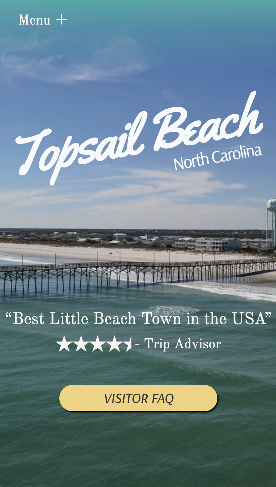

Portfolio
Destination Marketing Visitor's Site Redesign
A 90's magazine ad-inspired full redesign and partial content refresh for a small North Carolina beach town's visitor information website.
Role
Web Designer, Copywriter, Front-end Developer
Responsibilities
Figma, Branding, Mobile-first design, Bootstrap, Custom CSS, Vanilla JavaScript, Animation
ASP.NET Core MVC Tutorial App
A full-stack ASP.NET Core tutorial app, built to practice my .NET and MVC architecture skills. With razor layouts, defined areas and dynamic routing, this project was an exciting challenge after focusing predominately on React and Vanilla JavaScript builds.
Role
Web Designer, Copywriter, Full-stack Developer
Skills
ASP.NET Core, C#, Dynamic routing, Razor Views, Areas with nested layouts, Custom CSS & Bootstrap, Client-side dynamic search auto-complete script.
Super Juice Recipe Calculator
A mobile-first, dynamic recipe calculator app for an innovative bartending product that exponentially reduces citrus waste and creates a nearly shelf-stable product, without losing out on flavor. Being a relatively new invention, it can be hard to find an authoritative recipe for Super Juice, let alone a calculator. So I made one.
Role
Web Designer, Copywriter, Front-end Developer
Skills
Figma logo and illustration design, CSS Grid for Mobile-first design, Dynamic input controls with vanilla JavaScript